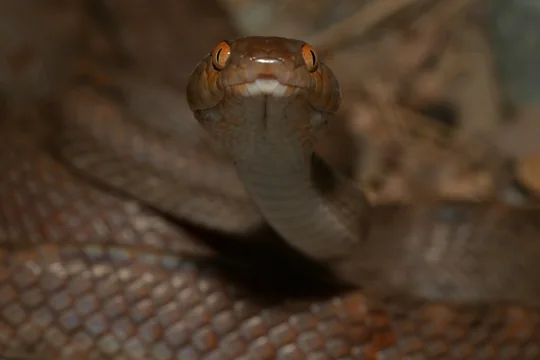
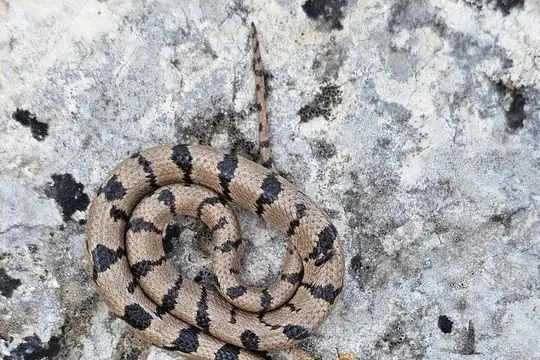
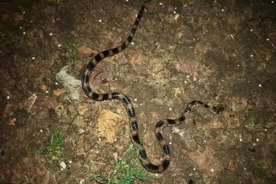
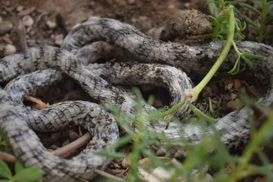
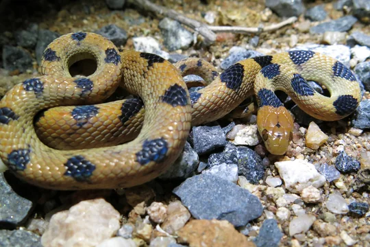
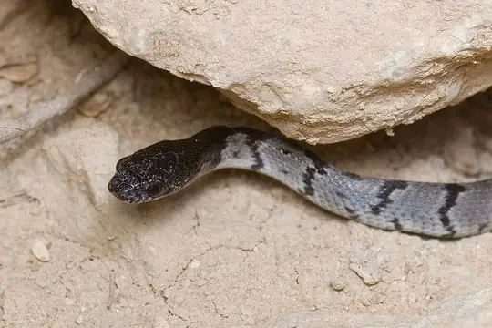
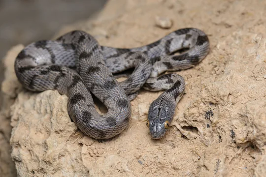

Telescopus
The genus Telescopus (family Colubridae) has 14 living species in SnakeList (none venomous), recorded in 69 countries.
- 14living species
- 14non-venomous
- 69countries
About the genus
A genus of the family Colubridae (colubrids).
Species
Showing 14 species

Arabian Cat SnakeTelescopus dhara- No photo yetBeautiful Cat SnakeTelescopus pulcher

Black-headed Snake (nigriceps)Telescopus nigriceps
Blue Nile Cat SnakeTelescopus gezirae Cat SnakeTelescopus fallax
Cat SnakeTelescopus fallax- No photo yetDamara Tiger SnakeTelescopus finkeldeyi
 Egyptian CatsnakeTelescopus obtusus
Egyptian CatsnakeTelescopus obtusus
Indian Desert Tiger SnakeTelescopus rhinopoma
Karoo Tiger SnakeTelescopus beetzi North African CatsnakeTelescopus tripolitanus
North African CatsnakeTelescopus tripolitanus
Sinai CatsnakeTelescopus hoogstraali
Soosan ViperTelescopus tessellatus Tiger Cat SnakeTelescopus semiannulatus
Tiger Cat SnakeTelescopus semiannulatus Variable Cat SnakeTelescopus variegatus
Variable Cat SnakeTelescopus variegatus
No snakes in Telescopus match.
About the genus Telescopus
- Distribution: living species recorded in 69 countries, on 3 continents: Africa, Asia, Europe.
- Family: Colubridae.
- Countries and territories: Afghanistan, Albania, Algeria, Angola, Armenia, Azerbaijan, Benin, Botswana, Bulgaria, Burkina Faso, Burundi, Cameroon, Central African Republic, Chad, Croatia, Cyprus, Democratic Republic of the Congo, Egypt, Eritrea, Eswatini, Ethiopia, Gambia, Georgia, Ghana, Greece, Guinea, Guinea-Bissau, Iran, Iraq, Israel, Italy, Ivory Coast, Jordan, Kenya, Lebanon, Libya, Malawi, Mali, Malta, Mauritania and 29 more.
Compare its species
Its living species side by side. Lengths come only from SnakeList’s reviewed, sourced accounts; the others are left blank rather than guessed.
| Species | Venom | Recorded in | Adult length (reviewed accounts) |
|---|---|---|---|
| Arabian Cat Snake Telescopus dhara | Non-venomous | 5 countries (Asia) | No reviewed account yet |
| Beautiful Cat Snake Telescopus pulcher | Non-venomous | 2 countries (Africa) | No reviewed account yet |
| Black-headed Snake (nigriceps) Telescopus nigriceps | Non-venomous | 5 countries (Asia) | No reviewed account yet |
| Blue Nile Cat Snake Telescopus gezirae | Non-venomous | 1 country (Africa) | No reviewed account yet |
| Cat Snake Telescopus fallax | Non-venomous | 21 countries (Asia, Europe) | No reviewed account yet |
| Damara Tiger Snake Telescopus finkeldeyi | Non-venomous | 2 countries (Africa) | No reviewed account yet |
| Egyptian Catsnake Telescopus obtusus | Non-venomous | 11 countries (Africa) | No reviewed account yet |
| Indian Desert Tiger Snake Telescopus rhinopoma | Non-venomous | 4 countries (Asia) | No reviewed account yet |
| Karoo Tiger Snake Telescopus beetzi | Non-venomous | 1 country (Africa) | No reviewed account yet |
| North African Catsnake Telescopus tripolitanus | Non-venomous | 11 countries (Africa) | No reviewed account yet |
| Sinai Catsnake Telescopus hoogstraali | Non-venomous | 2 countries (Asia) | No reviewed account yet |
| Soosan Viper Telescopus tessellatus | Non-venomous | 2 countries (Asia) | No reviewed account yet |
| Tiger Cat Snake Telescopus semiannulatus | Non-venomous | 14 countries (Africa) | No reviewed account yet |
| Variable Cat Snake Telescopus variegatus | Non-venomous | 13 countries (Africa) | No reviewed account yet |